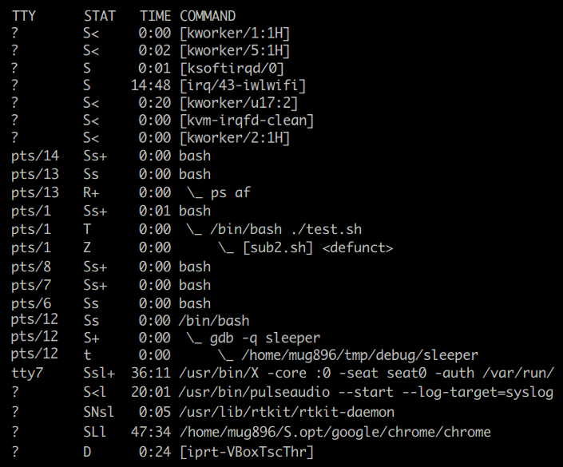

Process State Codes
ps ax 명령을 실행하면 STAT 컬럼에 현재 프로세스의 상태를 나타내는 기호들이 표시됩니다. 아래 첫번째 테이블의 상태 기호가 제일 앞에 오고 그다음에 두번째 테이블의 부가적인 기호가 표시됩니다.
| 기호 | 설명 |
|---|---|
| D | uninterruptible sleep (usually IO) |
| R | running or runnable (on run queue) |
| S | interruptible sleep (waiting for an event to complete) |
| T | stopped, either by a job control signal or because it is being traced. |
| t | stopped by debugger during the tracing |
| X | dead (should never be seen) |
| Z | defunct ("zombie") process, terminated but not reaped by its parent. |
다음은 BSD 포멧의 부가적인 정보를 나타냅니다.
| 기호 | 설명 |
|---|---|
| < | high-priority (not nice to other users) |
| N | low-priority (nice to other users) |
| L | has pages locked into memory (for real-time and custom IO) |
| s | is a session leader |
| l | is multi-threaded (using CLONE_THREAD, like NPTL pthreads do) |
| + | is in the foreground process group. |
다음은 현재 실행중인 linux OS 의 ps 정보를 발췌한 것입니다.

S : 대부분의 프로세스들이 이벤트 처리를 위해 현재 대기중에 있는것을 볼 수 있습니다.
R : ps af 명령은 현재 실행 중이므로 R 로 표시됩니다.
+ : 터미널에 연결돼 있는 interactive bash shell 프로세스들과 ps af 명령은 현재 foreground 로 실행중인걸 알 수 있습니다.
s : 터미널에 연결돼 있는 interactive bash shell 프로세스들은 session leader 인것을 알 수 있습니다.
T : test.sh 명령은 현재 suspend job control 명령에 의해 stop 상태입니다. ctrl-z 에 의해 프로그램 실행이 중단됐을때도 이 상태가 됩니다.
Z : sub2.sh 은 test.sh 에서 실행된 background process 인데 현재 종료된 상태 (defunct) 이나 parent 프로세스가 stop 되어있어 좀비 상태로 남아 있습니다. parent 프로세스가 실행을 재개한 후 종료되면 삭제됩니다.
좀비 프로세스는 이미 종료된 프로세스로 프로세스 테이블에서 pid 만 차지하고 있는 상태입니다 ( PCB 만 남은 상태 ). 그러므로 실행 중에 사용했던 메모리나 리소스들은 모두 반환된 상태입니다. child process 가 실행되면 parent process 는 종료 상태 값을 얻기 위해 wait system call 을 실행하는데 이때 종료된 child process 가 프로세스 테이블에서 삭제됩니다. 하지만 위의 경우는 parent process 가 stop 상태에 있어서 프로세스 테이블에서 삭제되지 못하고 좀비 상태로 남아있습니다.
t : 현재 stop 상태인 sleeper 명령은 gdb 에의해 trace 되고 있습니다.
< :
[ ]로 표시되는 대부분의 kernel threads 들과 pulseaudio 는 현재 높은 우선순위로 실행되고 있습니다.N : rtkit-daemon 은 현재 낮은 우선순위로 실행되고 있습니다.
l : X, pulseaudio, chrome 같은 프로그램들은 멀티 스레드를 사용하고 있습니다.
L : 메모리 locking 은 프로세스가 사용하는 가상 주소 공간을 물리적인 메모리에 lock 합니다. lock 된 페이지는 paging, swapping 에서 제외되고 unlock 될때까지 메모리에 존재하는 것이 보장되므로 주로 실시간 처리가 요구되는 프로그램에서 latency 를 줄이기 위해 사용됩니다.
D : D ( uninterruptible sleep ) 은 S ( interruptible sleep ) 과는 다르게 sleep 하는 동안 signal을 처리하지 않습니다. 심지어 kill 신호로 프로세스를 종료시킬 수도 없습니다. 주로 디바이스 드라이버에서 디스크나 네트워크 I/O 를 기다릴때 사용됩니다
[ ]으로 표시되는 경우 : ps 명령은 COMMAND 컬럼의 값을 표시할때 /proc/<pid>/cmdline 에 있는 내용을 사용하는데 여기에 값이 없을 경우 /proc/<pid>/stat 에 있는 명령 이름에 [ ] 를 더해서 표시한다고 합니다. 위 그림에서 보면 kernel threads 들과 zombie process 가된 sub2.sh 이 [ ] 로 표시되고 있습니다.
OS 가 실행되는 방식
OS 가 실행되는 방식을 다음과 같이 분류해 볼 수 있습니다.
- interrupt context
하드웨어 인터럽트는 highest priority 로 현재 실행 중인 프로세스와 관계없이 즉시 처리됩니다. 인터럽트 핸들러는 빠른 시간 내에 처리돼야 하므로 top half 와 bottom half 로 나누어서 top half 를 먼저 처리하고 시간이 걸리는 bottom half 는 이후에 softirq, tasklet 에서 처리되거나 kernel thread 에의해 처리됩니다. top half 에서 실행될 때는 동기화를 위해 모든 코어에서 해당 interrupt 가 disable 되며 실행중에 block 되는 일이 없습니다.
스케줄러는 프로세스가 직접 스케줄 함수를 호출하여 실행될 수도 있고( voluntary ) timer interrupt 에의해 실행될 수도 있는데 ( involuntary ) 이때는 interrupt handler 가 특정 flag 값을 설정하면 커널 모드에서 유저 모드( process context )로 복귀 과정에서 check 되어 실행됩니다.
- process context
process context 는 프로세스이므로 스케줄러에 의해 스케줄 될 수 있다는 점입니다. 그러므로 여기서는 실행 중에 sleep, block 될 수 있고 preempted 될 수도 있습니다. 프로그램이 실행되면서 발생하는 system call, exception 이 처리되는 것이 여기에 속합니다. system call 이 atomic 하다는 말이 있는데 이겄은 실행 중간에 signal 에의해 interrupt 됐다가 이어서 다시 실행되지 않는다는 뜻입니다. system call 은 wait 상태에서 signal sending 이 되면 EINTR 에러를 반환하고 종료하거나 자동으로 다시 처음부터 재시작합니다. interrupt handler 의 경우는 현재 system call 을 수행 중이던 상관없이 무조건 처리됩니다.
[ kernel threads ]
이것은 위에서 [ ] 로 표시되는 커널 스레드에 해당합니다.
커널 스레드는 일반 사용자 스레드와 동일하게 스케줄 되고 실행되는데
차이점은 유저모드가 아닌 커널모드에서 실행된다는 점이 다릅니다.
/proc/$PID/maps 에서는 프로세스의 메모리 매핑 정보를 볼 수 있는데
커널 스레드는 정보가 표시되지 않습니다.
# 이름 뒤에 보이는 숫자는 cpu core 를 나타냄
$ ps ax | grep ksoftirqd
$ ps ax | grep kworker
$ watch -d -n1 'cat /proc/softirqs'
- atomic context
분류를 process context 와 atomic context 로 하기도 합니다. process context 가 아니기 때문에 스케줄러에 의해 스케줄 되지 못하므로 여기서는 실행 중에 sleep, block 될 수 없고, mutex 도 사용할 수 없습니다. 또한 user space virtual address 에도 접근할 수 없는데 page fault 가 발생할 수 있기 때문입니다 ( 그러면 scheduling 돼야 하므로 )

Local timer interrupts 실시간 조회해보기
요즘 사용되는 멀티 코어 CPU 는 각 코어 별로 local timer 를 가지고 있는데요 이 local timer interrupt 에 의해 각 코어 별로 스케줄러가 실행됩니다. 현재 코어에서 실행 중인 프로세스가 할당된 시간이 다 되면 다음 프로세스가 실행됩니다.
아래 명령을 실행했을 때 보이는 숫자는 interrupt 가 처리된 횟수를 나타냅니다. 각 코어 별로 숫자가 표시되고 증가되는 것을 볼 수 있습니다.
$ watch -d -n1 'grep -C3 -i "local timer interrupts" /proc/interrupts'
$ watch -d -n1 'tail -n20 /proc/interrupts'
위로 두 번째는 저같은 경우 IR-PCI-MSI 409600-edge enp0s25 넷크워크 카드로 되어있는데 인터넷에서 파일을 다운로드할 때 조회해 보면 값이 크게 증가하는 것을 볼 수 있습니다. 키보드, 마우스, 디스크도 한번 찾아보시고 버튼을 눌렀을 때 몇 번 인터럽트가 발생하는지도 알아보세요.
프로세스 상태 변화 과정